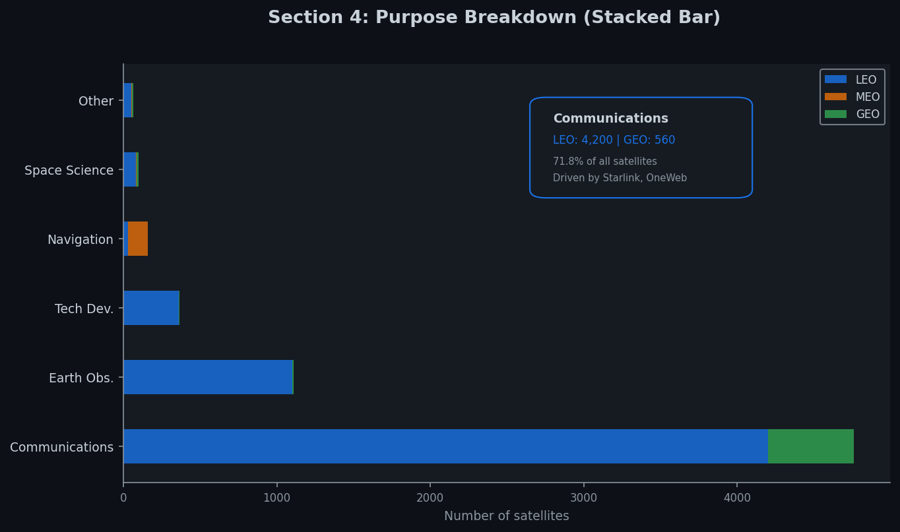
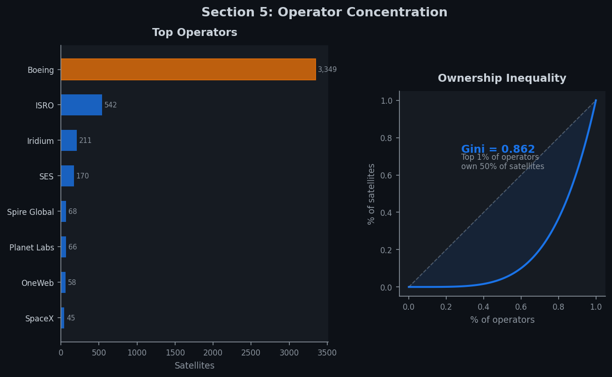

Who is filling Earth's orbit, and how is space becoming an increasingly crowded infrastructure?
In 1974, only a handful of satellites orbited Earth. Space was a frontier reserved for governments and a few scientific missions.
Through the 1990s and 2000s, the count grew steadily as GPS, weather, and communication satellites multiplied. By 2010, roughly 1,000 satellites were operational.
Then in 2019, everything changed. SpaceX began launching Starlink, a mega-constellation of thousands of small communication satellites in low Earth orbit.
By January 2023, 6,718 satellites were operational. 75.5% of them were launched from 2019 onward. Orbit went from a scientific frontier to a crowded infrastructure in just a few years.
The USA operates 67.1% of all satellites, largely driven by a single company. The top 3 countries account for the vast majority of orbital presence.
LEO holds 88.4% of all satellites. The altitude vs. inclination scatter reveals distinct orbital neighborhoods: Starlink at 530 km, sun-synchronous orbits at 97 degrees, and the GEO belt at 35,786 km.
Communications accounts for 71.8% of all satellites, driven by mega-constellations. Purpose and orbit are tightly coupled: navigation clusters in MEO, Earth observation stays in LEO.

A single operator controls 49.9% of all satellites. The Gini coefficient across 639 operators is 0.862. Orbital space is dominated by a handful of actors.
